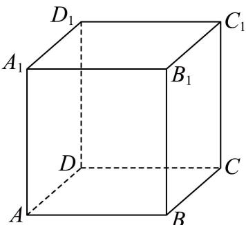
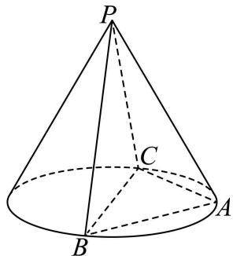

01 【来源：24春考·1】
查看所属专题函数 的定义域是______。
作答区
整卷阅读 · 学生版 · 21 题
按来源题号排列；内容来自分类汇编，仍需回源核对。
没有找到匹配题目。
函数 的定义域是______。
直线 的倾斜角大小为______。
已知 ，则 ______。
展开式中 的系数为______。
三角形 中，，，，则 ______。
已知 ， 的最小值为______。
数列 ，，， 的取值范围为______。
三角形三边长为 5，6，7，则以边长为 6 的两个顶点为焦点，过另外一个顶点的双曲线的离心率为______。
已知 ， 求 的 的取值范围______。
已知四棱柱 ，底面 为平行四边形，，，且 ，则异面直线 与 的夹角余弦值为______。

正方形草地 边长 1.2， 到 距离为 0.2， 到 距离为 0.4，有个圆形通道经过 ，且经过 上一点，求圆形通道的周长______。（精确到 0.01）

，，，，任意 ，满足 ，求有序数列 有______对。
，，下列不等式恒成立的是（ ）。
A.
B.
C.
D.
空间中有两个不同的平面 和两条不同的直线 ，则下列说法中正确的是（ ）。
A. 若 ，，，则 ；
B. 若 ，，，则 ；
C. 若 ，，，则 ；
D. 若 ，，，则 。
有四种礼盒，前三种里面分别仅装有中国结、记事本、笔袋，第四个礼盒里面三种礼品都有，现从中任选一个盒子，设事件 ：所选盒中有中国结，事件 ：所选盒中有记事本，事件 ：所选盒中有笔袋，则（ ）。
A. 事件 与事件 互斥；
B. 事件 与事件 相互独立；
C. 事件 与事件 互斥；
D. 事件 与事件 相互独立。
来源条件待核：题目未明确函数定义域及整数点的取值，结论可能受此影响。
现定义如下：当 时（），若 ，则称 为延展函数。已知当 时， 且 ，且 均为延展函数，则以下结论（ ）。
（1）存在 与 有无穷个交点；
（2）存在 与 有无穷个交点。
A. （1）（2）都成立
B. （1）（2）都不成立
C. （1）成立，（2）不成立
D. （1）不成立，（2）成立
已知 ，。
（1）设 ，求 ， 的值域；
（2）， 的最小正周期为 ，若在 上恰有 3 个零点，求 的取值范围。
如图， 为圆锥三条母线，。

（1）证明 ；
（2）若圆锥侧面积为 ， 为底面直径，，求二面角 的大小。
水果分为一级果和二级果，共 136 箱，其中一级果 102 箱，二级果 34 箱。
（1）随机挑选两箱水果，求恰好一级果和二级果各一箱的概率；
（2）进行分层抽样，共抽 8 箱水果，求一级果和二级果各几箱；
（3）抽取若干箱水果，其中一级果共 120 个，单果质量平均数为 303.45 克，方差为 603.46；二级果 48 个，单果质量平均数为 240.41 克，方差为 648.21；求 168 个水果的方差和平均数，并预估果园中单果的质量。
在平面直角坐标系 中，已知点 为椭圆 上一点， 分别为椭圆的左、右焦点。
（1）若点 的横坐标为 2，求 的长；
（2）设 的上、下顶点分别为 ，记 的面积为 ， 的面积为 ，若 ，求 的取值范围；
（3）若点 在 轴上方，设直线 与 交于点 ，与 轴交于点 ， 延长线与 交于点 ，是否存在 轴上方的点 ，使得 成立？若存在，请求出点 的坐标；若不存在，请说明理由。
记 ，。
（1）若 ，求 和 ；
（2）若 ，求证：对于任意 ，都有 ，且存在 ，使得 ；
（3）已知定义在 上 有最小值，求证：“ 是偶函数”的充要条件是“对于任意正实数 ，均有 ”。